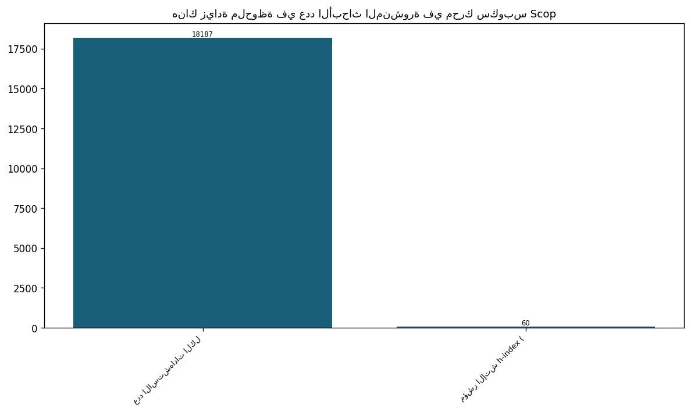
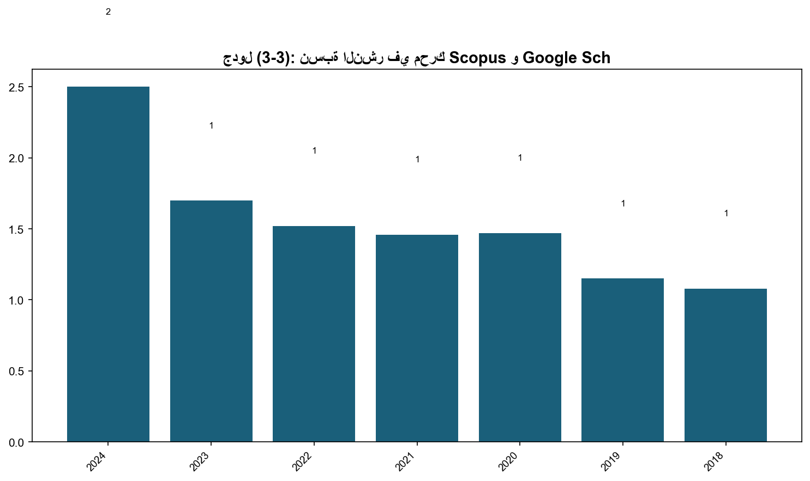
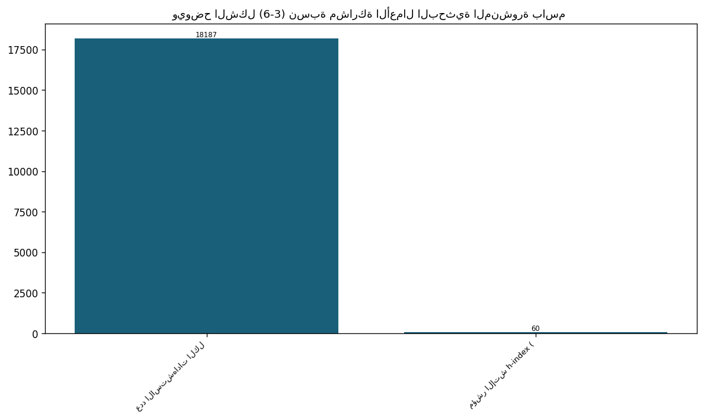
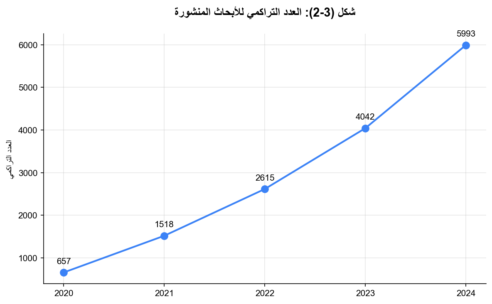
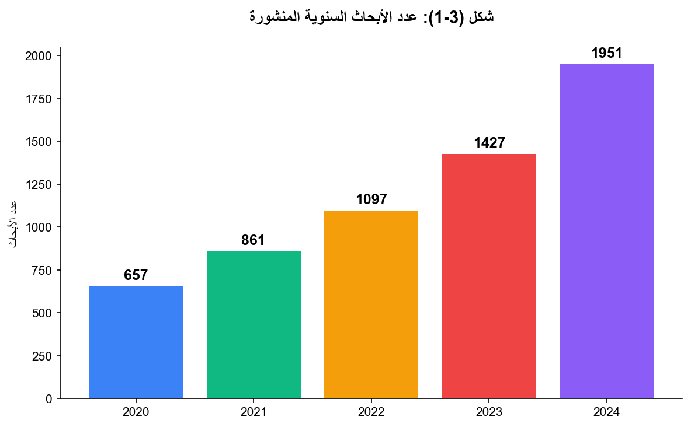
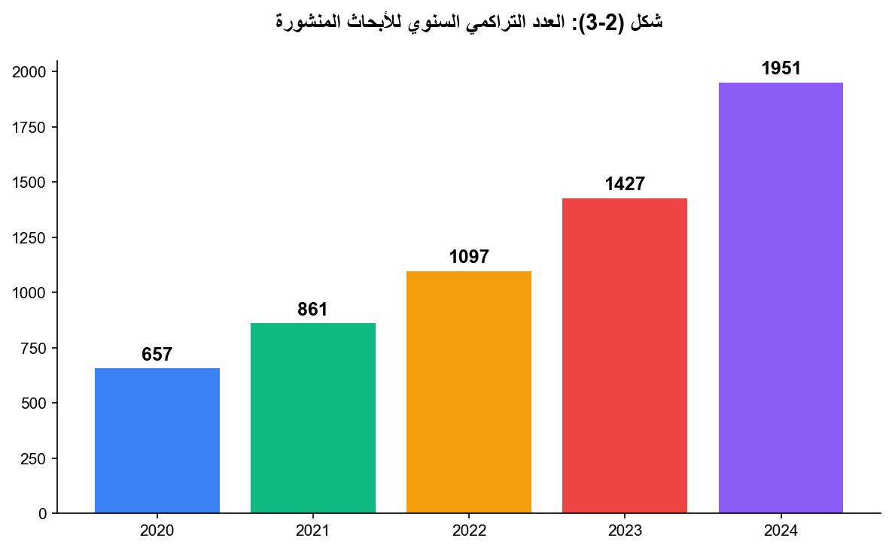

3.1: عدد الأبحاث المنشورة في SCOPUS و ISI
📝 5 فقرة
📋 3 جدول
📊 11/10 شكل
كما نُلاحظ أن أعداد الأبحاث المنشورة قد بلغت (1871) بحثًا منشورًا حتى العام 2024، وبزيادة مطردة في نشر الأبحاث في آخر 5 سنوات وبنمط متسارع.
وقد ارتفع مؤشر هيرش للجامعة على محرك سكوبس عام 2024 إلى 60، بالمقارنة مع 50 عام 2023، بينما كان المؤشر 42 في عام 2022 ، وهذا يُعدّ دليلًا إيجابيًا على تحسن النشر والاستشهادات العلمية في الجامعة.
هذا، ومما يجدر ذكره أن احتساب نسبة النشر في محرك Scopus وGoogle Scholar إلى عدد أعضاء الهيئة التدريسية موضح في الجدول أدناه:
3.2 معدل الاستشهاد إلى عدد أعضاء الهيئة التدريسية الحاصلين على الاستشهاد.
وبلغ عدد الاستشهادات عام 2024 (18187) استشهادًا، وكانت هناك زيادة متسارعة في أعداد الاستشهادات لآخر 5 سنوات.






جدول (3-1): مؤشرات أداء البحث العلمي لعام 2024.
📊 2 صف من البيانات
| عدد الأبحاث المنشورة الكلي 2024 | 1871 |
|---|---|
| عدد الاستشهادات الكلي | 18187 |
| مؤشر الإتش h-index (scopus) | 60 |
جدول (2-3): قائمة بالأبحاث المنشورة في محرك Scopus للعام 2024.
📊 454 صف من البيانات
| Authors | Title | Year | Journal | Volume | Issue | |
|---|---|---|---|---|---|---|
| Ishtaiwi A.; Al Khaldy M.A.; Al-Qerem A.; Aldweesh A.; Almomani A. | Artificial intelligence in cryptographic evolution: Bridging the future of secur | 2024 | Innovations in Modern Cryptography | |||
| Albataineh A. | The effect of remittances on poverty and economic growth in jordan: evidence fro | 2024 | Technological and Economic Development of Economy | 30 | 6 | |
| Al Hwaitat A.K.; Fakhouri H.N. | Adaptive Cybersecurity Neural Networks: An Evolutionary Approach for Enhanced At | 2024 | Applied Sciences (Switzerland) | 14 | 19 | |
| Alhaj O.A.; Jrad Z.; Oussaief O.; Jahrami H.A.; Ahmad L.; Alshuniaber M.A.; Meht | The characterization of Lactobacillus strains in camel and bovine milk during fe | 2024 | Heliyon | 10 | 21 | |
| Mohammad A.A.S.; Khanfar I.A.A.; Al-Daoud K.I.; Odeh M.; Mohammad S.I.; Vasudeva | Impact of perceived brand dimensions on Consumers' Purchase Choices | 2024 | Journal of Ecohumanism | 3 | 7 | |
| Mohammad A.A.S.; Alolayyan M.N.; Al-Daoud K.I.; Nammas Y.M.A.; Vasudevan A.; Moh | Association between Social Demographic Factors and Health Literacy in Jordan | 2024 | Journal of Ecohumanism | 3 | 7 | |
| Zaidalkilani A.T.; Al-kuraishy H.M.; Fahad E.H.; Al-Gareeb A.I.; Elewa Y.H.A.; Z | Autophagy modulators in type 2 diabetes: A new perspective | 2024 | Journal of Diabetes | 16 | 12 | |
| Lestari U.; Salam S.; Choo Y.-H.; Alomoush A.; Al Qallab K. | Automatic prediction of learning styles: a comprehensive analysis of classificat | 2024 | Bulletin of Electrical Engineering and Informatics | 13 | 5 | |
| Abu-Safe H.H.; Al-Adamat K.; Oliveira F.M.; Mazur Y.I.; Alhelais R.; Refaei M.; | Composite nanofilms of graphene and nickel: Fabrication, cw linear and nonlinear | 2024 | Applied Surface Science | 670 | ||
| Alhaj O.A.; Elsahoryi N.A.; Fekih-Romdhane F.; Wishah M.; Sweidan D.H.; Husain W | Prevalence of emotional burnout among dietitians and nutritionists: a systematic | 2024 | BMC Psychology | 12 | 1 | |
| Almuhur E.; Al-Labadi M.; Qousini M.; Bashir R. | Strongly Dαp-closed graphs in bitopological spaces | 2024 | International Journal of Advanced and Applied Sciences | 11 | 9 | |
| Jaware T.H.; Nayak C.; Parida P.; Ali N.; Sharma Y.; Hadi W. | Enhanced Neonatal Brain Tissue Analysis via Minimum Spanning Tree Segmentation a | 2024 | Computers | 13 | 10 | |
| Al-Qerem W.; Jarab A.; Hammad A.; Eberhardt J.; Alasmari F.; Alkaee S.M.; Alsaba | The association between health literacy and quality of life of patients with typ | 2024 | PLoS ONE | 19 | 10 | |
| Issa S.S.; Tabash M.I.; Ahmed A.; Riyadh H.A.; Alnahhal M.; Varma M. | Investigating the Relationship between Energy Consumption and Environmental Degr | 2024 | Journal of Risk and Financial Management | 17 | 9 | |
| Matar N.; Al-Jaber A.; Matar W. | Unlocking Business Intelligence and Data Analytics Adoption Patterns: Insights f | 2024 | Engineering, Technology and Applied Science Research | 14 | 5 | |
| Hussein N.M.; Al-Musawi T.J.; Kumar N.; Sharma R.; Mohammed A.I.; Sharma I.; Kal | The first and cost-effective nano-biocomposite znpor/rgo/tio2 as efficient UV ph | 2024 | Inorganic Chemistry Communications | 170 | ||
| Tabash M.I.; Farooq U.; Issa S.S. | BRIC in flux: Understanding the influence of energy policy uncertainty on foreig | 2024 | OPEC Energy Review | 48 | 4 | |
| Ibrahim O.M.; Al Mazrouei N.; Elnour A.A.; Ibrahim R.; Abdel-Qader D.H.; El Amin | Randomized controlled trial parallel-group on optimizing community pharmacist’s | 2024 | PLoS ONE | 19 | 10 | |
| Al-Hakim M.; Hanna I.M.; Sameer I.S.; Samer Z.; Mohammad A.B. | Ijara Ending with Ownership (Lease) A Case Study of Jordanian Islamic Banks | 2024 | Journal of Ecohumanism | 3 | 7 | |
| AL-Hashimi N.N.; Alomoush Q.K.; El-Sheikh A.H.; Alsakhen N.A.; Barri T.; Abdelgh | A new Fe3O4-mwcnts-reinforced hollow fiber solid/liquid phase microextraction-ba | 2024 | Chemical Papers | 78 | 18 | |
| Ishtaiwi A.; Al-Shamayleh A.S.; Fakhouri H.N. | A Hybrid JADE–Sine Cosine Approach for Advanced Metaheuristic Optimization | 2024 | Applied Sciences (Switzerland) | 14 | 22 | |
| Alhasan R.F.; Huwari I.F.; Alqaryouti M.H.; Sadeq A.E.; Alkhaldi A.A.; Alruzzi K | Confronting English Speaking Anxiety: A Qualitative Study of Jordanian Undergrad | 2024 | Journal of Language Teaching and Research | 15 | 6 | |
| Nwasra N.; Daoud M.; Qaisar Z.H. | ANFIS-AMAL: Android Malware Threat Assessment Using Ensemble of ANFIS and GWO | 2024 | Cybernetics and Information Technologies | 24 | 3 | |
| E’Leimat D.; Al-Daoud K.I.; Vasudevan A.; Mohammad A.A.S.; Hunitie M.F.A.; Fei Z | The impact of corporate governance on the financial performance of banks | 2024 | Uncertain Supply Chain Management | 12 | 4 | |
| Zaidalkilani A.T.; Al-Kaby A.H.; El-Emshaty A.M.; Alhag S.K.; Al-Shuraym L.A.; S | Effect of Salt Stress on Botanical Characteristics of Some Table Beet (Beta vulg | 2024 | ACS Omega | 9 | 48 | |
| Adwan S.; Al-Akayleh F.; Qasmieh M.; Obeidi T. | Enhanced Ocular Drug Delivery of Dexamethasone Using a Chitosan-Coated Soluplus® | 2024 | Pharmaceutics | 16 | 11 | |
| Al-Akayleh F.; Alkhawaja B.; Al-Zoubi N.; Abdelmalek S.M.A.; Daadoue S.; AlAbbas | Novel therapeutic deep eutectic system for the enhancement of ketoconazole antif | 2024 | Journal of Molecular Liquids | 413 | ||
| Huwari I.F.; Erkir S.; Alkhaldi A.A.; Royani I. | Analysis of Endophoric Reference in Lewis Carroll's Alice in Wonderland | 2024 | Forum for Linguistic Studies | 6 | 5 | |
| Al Khaldy M.A.; Al-Qerem A.; Aldweesh A.; Alauthman M. | A general framework for metaverse based on parallel computing and HPC | 2024 | Indonesian Journal of Electrical Engineering and Computer Science | 35 | 3 | |
| Abuarqoub D.; Aburayyan W.; Rashan L.; Dayyih W.A.; Al-Matubsi H.Y. | Phytochemical analysis and in vitro investigation of wound healing, cytotoxicity | 2024 | Journal of Applied Pharmaceutical Science | 14 | 10 | |
| Fakhouri H.N.; Alawadi S.; Awaysheh F.M.; Alkhabbas F.; Zraqou J. | A cognitive deep learning approach for medical image processing | 2024 | Scientific Reports | 14 | 1 | |
| Elsahoryi N.A.; Odeh M.M.; Alsous M.; Kastero D.H.; Al-Mughrabi L.F.; Darras S.A | Adolescents with Diabetes, exploring Knowledge, Attitude, and Practice: A Cross- | 2024 | Pharmacy Practice | 22 | 4 | |
| Mahmoud I.F.; Mahmoud K.F.; Elsahoryi N.A.; Mahmoud A.F.; Othman G.A. | Impact of associated factors and adherence to Mediterranean diet on insomnia amo | 2024 | Scientific Reports | 14 | 1 | |
| Al-Ani I.H.; Hailat M.; Mohammed D.J.; Matalqah S.M.; Abu Dayah A.A.; Majeed B.J | Development and Evaluation of a Cost-Effective, Carbon-Based, Extended-Release F | 2024 | Molecules | 29 | 19 | |
| Amayreh M.; Esaifan M.; Hourani M.K. | A sensitive and selective voltammetric method for the detection of pyrogallol in | 2024 | Analytical Sciences | 40 | 9 | |
| Abu Jadayil S.M.; Alsaed A.K.; Mahmoud I.F.; Ahmad L.M.; Afaneh F.; Khalaf H.; S | Proximate analysis and vitamin B contents of fresh-made, canned chickpea and bro | 2024 | PLoS ONE | 19 | 12 | |
| Al Hwaitat A.K.; Fakhouri H.N. | Hybrid Artificial Protozoa-Based JADE for Attack Detection | 2024 | Applied Sciences (Switzerland) | 14 | 18 | |
| Elsahoryi N.A.; Olaimat A.; Abu Shaikha H.; Tabib B.; Holley R. | Food safety knowledge, attitudes and practices (KAP) of street vendors: a cross- | 2024 | British Food Journal | 126 | 11 | |
| Al Shaker H.A.; Barry H.E.; Hughes C.M. | Stakeholders' perspectives about challenges, strategies and outcomes of importan | 2024 | Exploratory Research in Clinical and Social Pharmacy | 15 | ||
| Alauthman M.; Aljuaid H.; Sathyaprakash P.; Aldweesh A.; M A.; Rasheed T.; Juman | Unintended Data Behaviour Analysis Using Cryptography Stealth Approach Against S | 2024 | Mobile Networks and Applications | 29 | 6 | |
| Al-Maseimi O.D.; Elsahoryi N.A.; Alhaj O.A.; Ahmad L.; Abbas M.M.; Zurkieh S. | Food-Related Risks: To What Extent Are Married Jordanian Women (Non-Pregnant, Pr | 2024 | Safety | 10 | 4 | |
| Al-Akayleh F.; Alkhawaja B.; Al-Remawi M.; Al-Zoubi N.; Nasereddin J.; Woodman T | An Investigation into the Preparation, Characterization, and Therapeutic Applica | 2024 | Journal of Pharmaceutical Innovation | 19 | 6 | |
| Elsahoryi N.A.; Maghaireh G.A.; Hammad F.J. | Understanding dental caries in adults: A cross-sectional examination of risk fac | 2024 | Clinical Nutrition Open Science | 57 | ||
| Ibrahim Hamzah A.; Hussein N.M.; Hazim Salem K.; Krishna Saraswat S.; Kaur M.; K | Adsorption behavior of hydroxyurea drug on pristine, Si, and Ge-doped carbon nit | 2024 | Inorganic Chemistry Communications | 170 | ||
| Audeh W.; Moradi H.R.; Sababheh M. | Matrix Hölder inequalities and numerical radius applications | 2024 | Linear Algebra and Its Applications | 696 | ||
| Abu Qaadan A.; Hamad F.; Fakhouri H. | Facilitating digital accessibility for students with disabilities into informati | 2024 | Library Management | 45 | 9-Aug | |
| Albataineh A.K.F.; Harb A.S.M.; Alnajjar A.H.; Alhaj R.S. | Evaluating the impact of business incubators on promoting growth and creativity | 2024 | International Journal of Management and Sustainability | 13 | 4 | |
| Osman H.A.; Abuhamdah S.M.A.; Hassan M.H.; Hashim A.A.; Ahmed A.E.; Elsayed S.S. | NLRP3 inflammasome pathway involved in the pathogenesis of metabolic associated | 2024 | Scientific Reports | 14 | 1 | |
| Fakhouri H.N.; Al-Shamayleh A.S.; Ishtaiwi A.; Makhadmeh S.N.; Fakhouri S.N.; Ha | Hybrid Four Vector Intelligent Metaheuristic with Differential Evolution for Str | 2024 | Algorithms | 17 | 9 | |
| Khurshid N.; Butt N.A.; Fiaz A.; Issa S.S.; Tabash M.I.; Al-Absy M.S.M. | Do Climate Change Matter for Agricultural Production in an era of Globalization? | 2024 | International Journal of Energy Economics and Policy | 14 | 5 | |
| Al-Akayleh F.; Agha A.S.A.A.; Al‐Remawi M.; Al‐Adham I.S.I.; Daadoue S.; Alsisan | What We Know About the Actual Role of Traditional Probiotics in Health and Disea | 2024 | Probiotics and Antimicrobial Proteins | 16 | 5 | |
| Ghazzawi H.A.; Nimer L.S.; Haddad A.J.; Alhaj O.A.; Amawi A.T.; Pandi-Perumal S. | A systematic review, meta-analysis, and meta-regression of the prevalence of sel | 2024 | Journal of Eating Disorders | 12 | 1 | |
| Kataya G.; Charif Z.E.; Badran A.; Cornu D.; Bechelany M.; Hijazi A.; Sukkariyah | Evaluating the impact of different biochar types on wheat germination | 2024 | Scientific Reports | 14 | 1 | |
| Almheidat M.; Ullah Z.; Alam M.M.; Boujelbene M.; Ebaid A.; Alsulami M.D.; Alhum | Entropy generation analysis of oscillatory magnetized darcian flow of mixed ther | 2024 | Case Studies in Thermal Engineering | 61 | ||
| Alqudah S.M.; Hailat M.; Zakaraya Z.; Abu Dayah A.A.; Abu Assab M.; Alarman S.M. | Impact of Opuntia ficus-indica Juice and Empagliflozin on Glycemic Control in Ra | 2024 | Current Issues in Molecular Biology | 46 | 11 | |
| Al-Yasin N.F. | The Pragmatic Functions of Emojis in University-Related Facebook Group-Posts: A | 2024 | Journal of Language Teaching and Research | 15 | 6 | |
| Al-sawalha M.M.; Khan Z.; Almheidat M.; Shah R.; Begum N.; Fathima D. | Two branches solutions for mixed convection flow of thermally Williamson nanoflu | 2024 | ZAMM Zeitschrift fur Angewandte Mathematik und Mechanik | 104 | 11 | |
| Alqam M.A.; Hamshari Y.M. | The impact of financial literacy on financial inclusion for financial well-being | 2024 | Discover Sustainability | 5 | 1 | |
| Abdelrahim D.N.; Herrag S.E.E.; Khaled M.B.; Radwan H.; Naja F.; Alkurd R.; Khan | Changes in energy and macronutrient intakes during Ramadan fasting: a systematic | 2024 | Nutrition Reviews | 82 | 11 | |
| Makhadmeh S.N.; Al-Betar M.A.; Abasi A.K.; Al-Redhaei A.; Alomari O.A.; Kouka S. | A Hybrid Marine Predators Algorithm with Particle Swarm Optimization Using Renew | 2024 | Arabian Journal for Science and Engineering | 49 | 9 | |
| Adwan S.; Qasmieh M.; Al-Akayleh F.; Ali Agha A.S.A. | Recent Advances in Ocular Drug Delivery: Insights into Lyotropic Liquid Crystals | 2024 | Pharmaceuticals | 17 | 10 | |
| Al-Dabbagh U.; Othman W. | Gaps in translation technology education: A case study of Jordanian universities | 2024 | Training, Language and Culture | 8 | 4 | |
| Amayreh M.; Esaifan M.; Hourani M.K. | Voltammetric Determination of Hydroquinone in Water Samples Using Platinum Elect | 2024 | Journal of Analytical Chemistry | 79 | 10 | |
| Rawashdeh A.; Alkasassbeh M.; Alauthman M.; Almseidin M. | A stacked ensemble approach to identify internet of things network attacks throu | 2024 | Bulletin of Electrical Engineering and Informatics | 13 | 6 | |
| Zaidalkilani A.T.; Al-Kuraishy H.M.; Al-Gareeb A.I.; Alexiou A.; Papadakis M.; A | The beneficial and detrimental effects of prolactin hormone on metabolic syndrom | 2024 | Journal of Cellular and Molecular Medicine | 28 | 23 | |
| Aldweesh A.; Alauthman M.; Al-Qerem A.; Ishtaiwi A.; Almomani A.; Al Khaldy M. | Revolutionizing cryptography blockchain as a catalyst for advanced security syst | 2024 | Innovations in Modern Cryptography | |||
| Subih H.S.; Mouzik M.; Obeidat B.; Obeidat B.S.; Al-Bayyari N.; Obeidat L.B.; El | Insulin, Leptin and Ghrelin are Correlated with Sex but Not with Age in Healthy | 2024 | International Journal of Agriculture and Biosciences | 13 | 4 | |
| Naser A.Y.; Aboutaleb R.; Khaleel A.; Alsairafi Z.K.; Alwafi H.; Qadus S.; Itani | Knowledge, attitude, and practices of pharmacy students in 7 Middle Eastern coun | 2024 | Medicine (United States) | 103 | 36 | |
| Al-Hamad M.; Alhyasat K.M.K.; Allozi A.; Alhamad A.Q.M. | Medium of Instruction Matters: Reflecting Voices from EFL Teachers in Online/Tra | 2024 | CALL-EJ | 25 | 4 | |
| Taha T.A.-E.A.; Abdel-Qader D.H.; Alamiry K.R.; Fadl Z.A.; Alrawi A.; Abdelsatta | Perception, concerns, and practice of chatgpt among Egyptian pharmacists: a cros | 2024 | BMC Health Services Research | 24 | 1 | |
| Al-Remawi M.; Ali Agha A.S.A.; Al-Akayleh F.; Aburub F.; Abdel-Rahem R.A. | Artificial intelligence and machine learning techniques for suicide prediction: | 2024 | Heliyon | 10 | 24 | |
| Adwan S.; Obeidi T.; Al-Akayleh F. | Chitosan Nanoparticles Embedded in In Situ Gel for Nasal Delivery of Imipramine | 2024 | Polymers | 16 | 21 | |
| Tabash M.I.; Ahmed A.; Issa S.S.; Mansour M.; Varma M.; Al-Absy M.S.M. | Multiple Behavioral Conditions of the Forward Exchange Rates and Stock Market Re | 2024 | Computation | 12 | 12 | |
| Hijazi A.K.; Taha Z.A.; Issa D.K.; Alshare H.M.; Al-Momani W.M.; Elrashidi A.; B | Synthesis, Characterization and Catalytic/Antimicrobial Activities of Some Trans | 2024 | Molecules | 29 | 23 | |
| Shamout M.D.; Hamouche S.; Elayan M.B.; Rawashdeh A.M.; Elrehail H.; Alshwayat D | Modeling the moderating role of institutions on logistics–environment nexus in d | 2024 | Energy and Environment | 35 | 7 | |
| Alauthman M.; Aldweesh A.; Al-Qerem A.; Al Maqousi A.Y.; Almomani A.; Alkasassbe | Cryptographic protocols for Internet of Things (iot) security lightweight scheme | 2024 | Innovations in Modern Cryptography | |||
| Alnatour A.; Al-Mawali H.; Zaidan H.; Meqbel R.; Kawuq S. | The readiness of Jordanian-listed firms toward caatts application in the post Co | 2024 | Discover Sustainability | 5 | 1 | |
| Jamal N.; Alauthman M.; Malhis M.; Ishtaiwi A.M. | Forecasting research influence: a recurrent neural network approach to citation | 2024 | Indonesian Journal of Electrical Engineering and Computer Science | 36 | 2 | |
| Al Khaldy M.; Aburub F.; Al-Qerem A.; Aldweesh A.; Almomani A. | Secure key generation and management using generative adversarial networks | 2024 | Innovations in Modern Cryptography | |||
| E’leimat D.; Al Hayek M.A.; Saber I.T.; Hamdan M.N.; Mohammad A.A.S.; Vasudevan | Exploring the shift: Factors shaping the adoption of electronic payment in Jorda | 2024 | International Journal of Data and Network Science | 8 | 4 | |
| Audeh W.; Al-Boustanji A.; Al-Labadi M.; Al-Naimi R. | Singular value inequalities of matrices via increasing functions | 2024 | Journal of Inequalities and Applications | 2024 | 1 | |
| Zuhair T. | Hamlet's displacement as a recurrent case in Cather's A Lost Lady and Al Halaby' | 2024 | Shakespeare and the Modern Novel | |||
| Al-Momani E.; Shatnawi A.; Almomani M.; Almomani A.; Alauthman M. | A classification model for predicting course outcomes using ensemble methods | 2024 | International Journal of Electrical and Computer Engineering | 14 | 6 | |
| Omar K.; Fakhouri H.; Zraqou J.; Marx Gómez J. | Usability Heuristics for Metaverse | 2024 | Computers | 13 | 9 | |
| Issa S.S.; Tabash M.I.; Riyadh H.A.; Shamansurova Z.; Khan M.R.; Farooq U. | Corporate Social Responsibility and its Influence on Trade Credit: An Analysis o | 2024 | Advances in Decision Sciences | 28 | 3 | |
| Jaber M.A.; Al Natour A.R.; Alnatour M.; Mansoor K. | Knowledge and attitude of the Jordanian community towards the use of medicinal h | 2024 | Trees, Forests and People | 18 | ||
| Issa S.S.; Ahmed A.; Tabash M.I.; Khan M.R.; Shamansurova Z.; Farooq U. | Examining the Interplay between Tax Systems and Corporate Finance across Diverse | 2024 | Advances in Decision Sciences | 28 | 3 | |
| Alahmadi A.; Alduweib E.; Alahmadi A.; Alromema W.; Ahmed B. | Development of a Deep Learning-based Arabic Speech Recognition System for Automa | 2024 | Engineering, Technology and Applied Science Research | 14 | 6 | |
| Maqousi A.; Alauthman M.; Almomani A. | Homomorphic encryption enabling computation on encrypted data for secure cloud c | 2024 | Innovations in Modern Cryptography | |||
| Elsahoryi N.A.; Alkurd R.A.; Subih H.; Musharbash R. | Erratum to “Effect of low-calorie ketogenic vs low-carbohydrate diets on body co | 2024 | Obesity Medicine | 51 | ||
| Ahmad M.I.; Amorim C.G.; Abu Qatouseh L.F.; Montenegro M.C.B.S.M. | Nanobody-based immunosensor for the detection of H. Pylori in saliva | 2024 | Biosensors and Bioelectronics | 260 | ||
| Almheidat M.; Alqudah M.; Souayeh B.; Tuan N.M.; Ahmad S.; Abualnaja K.M. | Nanoscale heat transport analysis of magnetized trihybrid nanofluid over wedge a | 2024 | Case Studies in Thermal Engineering | 64 | ||
| Khrisat Z.; Fakhouri H.N. | Impact of E-learning Tools (Moodle, Microsoft Teams, Zoom) on Student Engagement | 2024 | International Journal of Interactive Mobile Technologies | 18 | 18 | |
| Alkhawaja B.; Abuarqoub D.; Al-Natour M.; Alshaer W.; Abdallah Q.; Esawi E.; Jab | Facile Rebridging Conjugation Approach to Attain Monoclonal Antibody-Targeted Na | 2024 | Bioconjugate Chemistry | 35 | 10 | |
| Fakhouri H.N.; Alkhalaileh M.S.; Hamad F.; Sirhan N.N.; Fakhouri S.N. | Hybrid Arctic Puffin Algorithm for Solving Design Optimization Problems | 2024 | Algorithms | 17 | 12 | |
| Esaifan M.; Al Daboubi F.; Hourani M.K. | Preparation of Mesoporous Analcime/Sodalite Composite from Natural Jordanian Kao | 2024 | Materials | 17 | 19 | |
| Rizk F.H.; Barhoma R.A.E.; El-Saka M.H.; Ibrahim H.A.; El-Gohary R.M.; Ismail R. | Exercise training and spexin ameliorate thyroid changes in obese type 2 diabetic | 2024 | American Journal of Physiology - Endocrinology and Metabolism | 327 | 3 | |
| Mohammad A.A.S.; Al-Daoud K.I.; Mohammad S.I.S.; Samarah T.A.; Vasudevan A.; Li | Content Marketing Optimization: A/B Testing and Conjoint Analysis for Engagement | 2024 | Journal of Ecohumanism | 3 | 7 | |
| Alhaj O.A.; Abodoleh G.; Abu Jadayil S.; Irshaid N.; Mehta B.M.; Faye B.; Jahram | A systematic review and meta-analysis of the antihypertensive effects of camel m | 2024 | International Journal of Dairy Technology | 77 | 4 | |
| AbuShihab K.; Obaideen K.; Alameddine M.; Alkurd R.A.F.; Khraiwesh H.M.; Mohamma | Reflection on Ramadan Fasting Research Related to Sustainable Development Goal 3 | 2024 | Journal of Religion and Health | 63 | 5 | |
| ... و 354 صف إضافي | ||||||
جدول (3-3): نسبة النشر في محرك Scopus و Google Scholar إلى عدد حملة الدكتوراة من أعضاء الهيئة التدري
📊 7 صف من البيانات
| العام | نسبة النشر السنوي SCOPUS | نسبة النشر السنوي Google Scholar | الملاحظات |
|---|---|---|---|
| 2024 | 1.9 | 2.5 | لكامل العام |
| 2023 | 1.01 | 1.7 | لكامل العام |
| 2022 | 0.94 | 1.52 | لكامل العام |
| 2021 | 0.76 | 1.46 | لكامل العام |
| 2020 | 0.57 | 1.47 | لكامل العام |
| 2019 | 0.33 | 1.15 | لكامل العام |
| 2018 | 0.33 | 1.08 | لكامل العام |